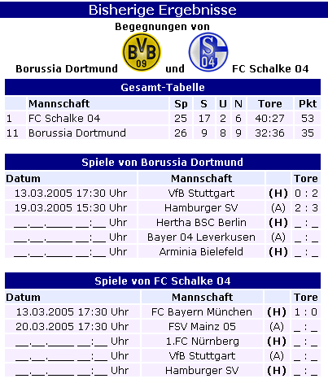
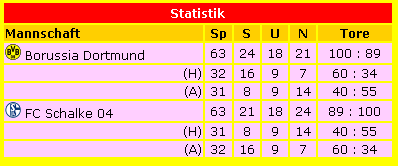

Team Vergleich
Der TeamVergleich ist ein Addon für den LMO 4. Er vergleicht die Begegnung der aktuellen Spielzeit mit beliebig definierbaren Ligen und gibt diese bei vorhanden sein aus. Das Ausehen können Sie mit der Hilfe von Templates beliebig anpassen. Den TV können Sie auch ohne Archiv-Ligen zum Überblick der Teams nutzen (z.B.Zur Hilfe im Tippspiel). Sie sehen so auf einen Blick die Tabellenposition, Hin- und Rückspiel, vergangene Spiele usw.[nach oben]
Systemvoraussetzung
- Lauffähiger LMO 4
- Installiertes ClasslibAddon mit PDF Class für LMO 4 (c) von Tim Schumacher
Templates
Ähnlich wie beim LMO können Sie auch den TeamVergleich in Struktur und Design beliebig ändern. Beispiele befinden sich nach der Installation im Unterverzeichnis stats des Templateverzeichnis template. Sie können beliebig viele unterschiedliche Templates (mit der Dateiendung .tpl.php) anlegen.
Eine ausführliche Installationsanleitung ist der jeweiligen Version beigefügt. [nach oben]
Download
[nach oben]Versionsverlauf
- Version 1.1
- Ausgabe erfolgt als PopUp
- Ausgabe von Datum/Uhrzeit/Notiz/Spielbericht
- Tabellenposition der gesuchten Mannschaften
- Statistik nach gewonnen, unentschieden und verloren
- Anzeige von zurueckliegenden und folgenden Partien der Teams
- Einbindung im Spielplan des LMO
- Einbindung im Tippspiel
- Anpassung an die Sprachenroutine des LMO, PHP- und PDF Ausgabe
- Beseitigung einiger kleiner Fehler
- Ausgabe von Datum/Uhrzeit/Notiz/Spielbericht
- Version 1.0
- Ausgabe der Partie als PHP oder PDF
- Einbindung in Ergebnissen